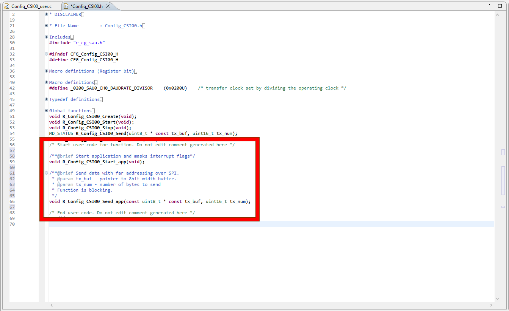
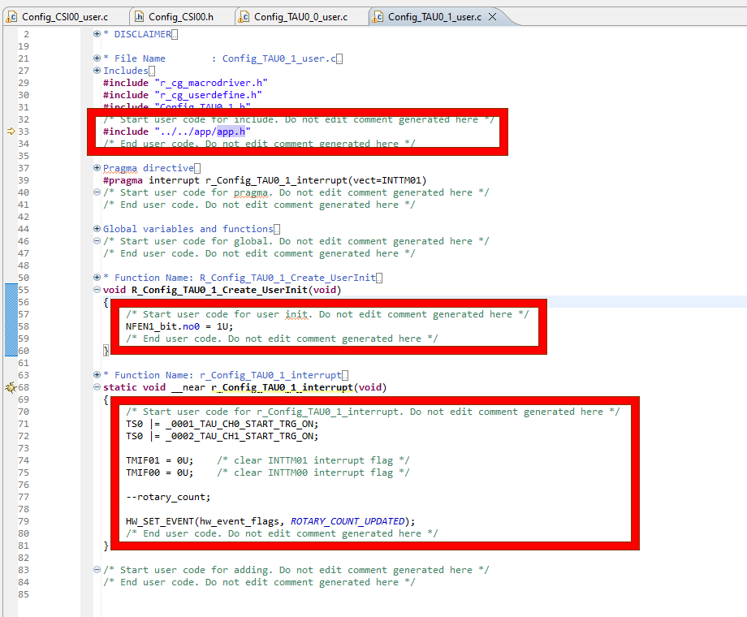
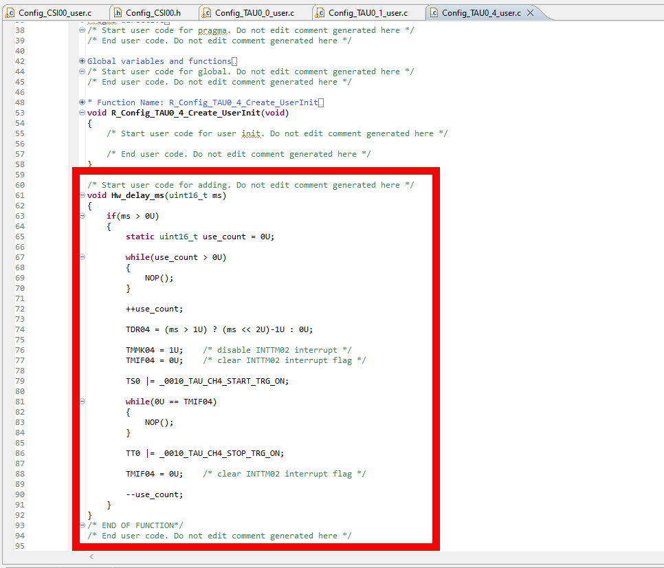

Here we will guide you through both inclusion and understanding of the code for this project. The aim is to give an understanding of how to use smart configurator generated code, the e² studio build settings & finally what the lab code does.
3.1 Pull In The Free Code
First we have to pull in the free code provided for this lab that is the ELCL library & the display
drivers. We call this free code as it serves a fixed purpose and is only here to facilitate the
training. It is not the subject of the training - the ELCL code gives us some API we can use to
manipualte the ELCL in a more intuitive way than direct register manipulations & the display drivers
allow us to represent data on the display.
To acquire the free code please click here to download & extract
the contents of the .zip archive.
Please copy the folders "display" & "elcl" into the "src" folder in your e² studio project.
3.2 Setup Include Paths
Now we must setup the compilers include paths so it can "see" the code we have pulled in. Build options
such as optimisations, compiler lookup paths, linker settings etc. can be found in the project settings:
[Right-Click] Project → Properties → C/C++ Build → Settings
From here we are particularly interested in Compiler → Source → Include file directories
(-I)
Using the [Add...] button, include the following entries:
- ${workspace_loc:/${ProjName}/src/display/driver}
- ${workspace_loc:/${ProjName}/src/display/assert}
- ${workspace_loc:/${ProjName}/src/display/text}
- ${workspace_loc:/${ProjName}/src/elcl}
- ${workspace_loc:/${ProjName}/src}
The following animation and picture show the procedure to access the build settings & result of the additions respecitvely.
3.3 Create Application Header
Now lets generate a main.h header file where we can store some useful typedefs & other project
macros/variables used between the drivers and applciation code. This will be our interface file between
the components across the application.
[Right-Click] src folder → New → Header File
Name the header file "main.h" & set the template to <none> then copy the code
below into the file "main.h" you have just created.

#ifndef MAIN_H_
#define MAIN_H_
#include "r_smc_entry.h"
#include "st7735s.h"
#include "text.h"
#include "elcl.h"
#define MAXIMUM_SYSTEM_STATES (3)
/** @brief sets a hardware event flag*/
#define HW_SET_EVENT(flags,event) {flags |= event;}
/** @brief Checks if hardware event flag is set*/
#define HW_EVENT_OCCURRED(flags,event) ( ((flags) & (event)) == event )
/** @brief macro used to prepare for disabling interrupts*/
#define PREPARE_CRITICAL_SECTION() uint8_t l_int_status = Interrupts_enabled()
/** @brief macro used to disable interrupts*/
#define ENTER_CRITICAL_SECTION() DI()
/** @brief macro used to enable interrupts*/
#define EXIT_CRITICAL_SECTION() if(l_int_status == 1U) { EI(); }
/** @brief Configuration macro for state text X location*/
#define TEXT_X_POSITION (65U)
/** @brief Configuration macro for state text Y location*/
#define TEXT_Y_POSITION (20U)
/** @brief Enumerated type for hardware event flags*/
typedef enum
{
NO_EVENT = 0x0000U,
BUTTON_CLICK = 0x0001U,
ROTARY_COUNT_UPDATED = 0x0002U,
ALL_HARDWARE_EVENTS = 0x0003U,
}hardware_event_t;
/** @brief Enumerated type for backlight level*/
typedef enum
{
BACKLIGHT_OFF = 0x0000U,
BACKLIGHT_DIM = 0x0001U,
BACKLIGHT_ON = 0x0002U,
}backlight_level_t;
/** Colours*/
static const uint8_t COLOUR_BLACK[] = {0x00, 0x00};
static const uint8_t COLOUR_WHITE[] = {0xFF, 0xFF};
/** rotary counter*/
extern volatile int16_t rotary_count;
/** hardware event flags*/
extern volatile hardware_event_t hw_event_flags;
#endif3.4 Edit the DTC Driver
The DTC base driver doesn't provide the appropriate functionality out of the box - so let's edit it and
give ourselves the function we need, this is a dtc start function which resets the count register &
the transfer source address.
Navigate to [src] → [smc_gen] → [Config_DTC] → Config_DTC.h
At the bottom of the file, in the "Start user code for function..." comment gaurd - place the following
function declaration.
/** @brief Function to start the DTC running for tone generation.
* @param tone - pointer to near data (16bit address) to set the source address for DTC0 transfers.
*/
void Start_dtc(__near uint8_t * tone);Which should look like this:
Next navigate to the corresponding Config_DTC.c file ([src] → [smc_gen] → [Config_DTC] → Config_DTC.c) and please add the following code at the bottom of the file, again within the comment gaurd "Start user code for adding...".
void Start_dtc(__near uint8_t * tone)
{
dtc_controldata_0.dtcct = _09_DTCD0_TRANSFER_BYTE;
dtc_controldata_0.dtsar = (uint16_t)tone;
DTCEN3 |= _04_DTC_TAU06_ACTIVATION_ENABLE;
}
/* END OF FUNCTION*/Which should look like this:
3.5 Edit the SPI Driver
The SPI base driver doesn't provide the appropriate functionality out of the box - so let's edit it and
give ourselves the functions we need, this is namely an SPI send function which blocks and polls the tx
end flag until data is finished sending & which accesses data in the far
memory area - useful when driving a display as images are often stored in ROM.
Navigate to [src] → [smc_gen] → [Config_CSI00] → Config_CSI00.h
At the bottom of the file, in the "Start user code for function..." comment gaurd - place the following
function declaration.
/**@brief Start application and masks interrupt flags*/
void R_Config_CSI00_Start_app(void);
/**@brief Send data with far addressing over SPI.
* @param tx_buf - pointer to 8bit width buffer.
* @param tx_num - number of bytes to send
* Function is blocking.
*/
void R_Config_CSI00_Send_app(uint8_t __far const * const tx_buf, uint16_t tx_num);Which should look like this:
Next navigate to the corresponding Config_CSI00.c file ([src] → [smc_gen] → [Config_CSI00] → Config_CSI000.c) and please add the following code at the bottom of the file, again within the comment gaurd "Start user code for adding...".
void R_Config_CSI00_Start_app(void)
{
SO0 &= (uint16_t)~_0100_SAU_CH0_CLOCK_OUTPUT_1; /* CSI00 clock initial level */
SO0 &= (uint16_t)~_0001_SAU_CH0_DATA_OUTPUT_1; /* CSI00 SO initial level */
SOE0 |= _0001_SAU_CH0_OUTPUT_ENABLE; /* enable CSI00 output */
SS0 |= _0001_SAU_CH0_START_TRG_ON; /* enable CSI00 */
CSIIF00 = 0U; /* clear INTCSI00 interrupt flag */
CSIMK00 = 1U; /* disable INTCSI00 interrupt */
}
void R_Config_CSI00_Send_app(uint8_t __far const * const tx_buf, uint16_t tx_num)
{
uint16_t l_tx_num = tx_num;
uint8_t __far const * l_tx_buf = tx_buf;
while(l_tx_num > 0U)
{
SIO00 = *l_tx_buf;
l_tx_num--;
l_tx_buf++;
/* Wait for the interrupt flag to set*/
while(0U == CSIIF00)
{
NOP();
}
CSIIF00 = 0U;
}
}Which should look like this:

3.6 Populate TAU00 ISR
The clockwise external event counter needs it's ISR populating - this ISR fires every time a clockwise
rotation (mechanical indent of the rotary encoder) is detected. We fill this ISR with some code so the
application can be made aware of a clockwise rotation.
Now first we need to include our "main.h" file from earlier to enable the ISR to communicate with the
application.
Navigate to the [src] → [smc_gen] → [Config_TAU0_0] → Config_TAU0_0_user.c &
copy the code below into the includes section of the file, inside the "Start user code for include..."
comment gaurd.
#include "main.h"Then inside the R_Config_TAU0_0_Create_UserInit function, please place the following code. This code enables the noise filter on the input so will filter any noise on the encoder signals. This location is software hook called at the end of the create API & code should be placed within the "Start user code for user init..." comment gaurd.
NFEN1_bit.no0 = 1U;Finally inside the r_Config_TAU0_0_interrupt isr, please place the following code. This code signals to the application that a rotary event has been detected and manipulates a counter. It also clears the interrupt flags and restarts both timers as a debounce precaution. It should be placed within the "Start user code for r_Config_TAU0_0_interrupt..." comment gaurd.
TS0 |= _0001_TAU_CH0_START_TRG_ON;
TS0 |= _0002_TAU_CH1_START_TRG_ON;
TMIF01 = 0U; /* clear INTTM01 interrupt flag */
TMIF00 = 0U; /* clear INTTM00 interrupt flag */
++rotary_count;
HW_SET_EVENT(hw_event_flags, ROTARY_COUNT_UPDATED);The changes should look like this when finished:
3.7 Populate TAU01 ISR
The anti-clockwise external event counter needs it's ISR populating - this ISR fires every time a
anti-clockwise
rotation (mechanical indent of the rotary encoder) is detected. We fill this ISR with some code so the
application can be made aware of a anti-clockwise rotation.
Now first we need to include our "main.h" file from earlier to enable the ISR to communicate with the
application.
Navigate to the [src] → [smc_gen] → [Config_TAU0_1] → Config_TAU0_1_user.c &
copy the code below into the includes section of the file, inside the "Start user code for include..."
comment gaurd.
#include "main.h"Then inside the R_Config_TAU0_1_Create_UserInit function, please place the following code. This code enables the noise filter on the input so will filter any noise on the encoder signals. This location is software hook called at the end of the create API & code should be placed within the "Start user code for user init..." comment gaurd.
NFEN1_bit.no0 = 1U;Finally inside the r_Config_TAU0_1_interrupt isr, please place the following code. This code signals to the application that a rotary event has been detected and manipulates a counter. It also clears the interrupt flags and restarts both timers as a debounce precaution. It should be placed within the "Start user code for r_Config_TAU0_1_interrupt..." comment gaurd.
TS0 |= _0001_TAU_CH0_START_TRG_ON;
TS0 |= _0002_TAU_CH1_START_TRG_ON;
TMIF01 = 0U; /* clear INTTM01 interrupt flag */
TMIF00 = 0U; /* clear INTTM00 interrupt flag */
--rotary_count;
HW_SET_EVENT(hw_event_flags, ROTARY_COUNT_UPDATED);The changes should look like this when finished:
3.8 Populate TAU03 ISR
The delay counter fires when the button click on the rotary encoder is released - we need to poluate the
ISR with some code so it can signal to the application a button click has been detected.
Now first we need to include our "main.h" file from earlier to enable the ISR to communicate with the
application.
Navigate to the [src] → [smc_gen] → [Config_TAU0_3] → Config_TAU0_3_user.c &
copy the code below into the includes section of the file, inside the "Start user code for include..."
comment gaurd.
#include "main.h"Then inside the r_Config_TAU0_3_interrupt isr, please place the following code. This code signals to the application that a button click event has been detected. It should be placed within the "Start user code for r_Config_TAU0_3_interrupt..." comment gaurd.
HW_SET_EVENT(hw_event_flags, BUTTON_CLICK);The changes should look like this when finished:

3.9 Edit the TAU04 Driver
The interval timer TAU04 base driver doesn't provide the appropriate functionality out of the box - so
let's edit it and give ourselves the function we need, this is a ms resolution blocking delay.
Navigate to [src] → [smc_gen] → [Config_TAU0_4] → Config_TAU0_4.h
At the bottom of the file, in the "Start user code for function..." comment gaurd - place the following
function declaration.
/** @brief function to use a timer to delay ms number of milliseconds.
* @param ms - number of milliseconds to delay.
*/
void Delay_ms(uint16_t ms);Which should look like this:
Next navigate to the corresponding Config_TAU0_4.c file ([src] → [smc_gen] → [Config_TAU0_4] → Config_TAU0_4.c) and please add the following code at the bottom of the file, again within the comment gaurd "Start user code for adding...".
void Delay_ms(uint16_t ms)
{
if(ms > 0U)
{
TDR04 = (ms > 1U) ? (ms << 2U)-1U : 0U;
TMMK04 = 1U; /* disable INTTM02 interrupt */
TMIF04 = 0U; /* clear INTTM02 interrupt flag */
TS0 |= _0010_TAU_CH4_START_TRG_ON;
while(0U == TMIF04)
{
NOP();
}
TT0 |= _0010_TAU_CH4_STOP_TRG_ON;
TMIF04 = 0U; /* clear INTTM02 interrupt flag */
}
}
/* END OF FUNCTION*/Which should look like this:
3.10 Edit the TAU06 Driver
The interval timer TAU06 base driver doesn't provide the appropriate functionality out of the box - so
let's edit it and give ourselves the function we need, this is running the interval timer until the DTC
completes generating the tone.
Navigate to [src] → [smc_gen] → [Config_TAU0_6] → Config_TAU0_6.h
At the bottom of the file, in the "Start user code for function..." comment gaurd - place the following
function declaration.
/** @brief used to start the timer and wait for the interrupt to finish*/
void Start_timer_wfi(void);Which should look like this:
Next navigate to the corresponding Config_TAU0_6_user.c file ([src] → [smc_gen] → [Config_TAU0_6] → Config_TAU0_6_user.c) and please add the following variable declaration near the top of the file, within the comment gaurd "Start user code for global...".
static uint8_t alarm_done = 0U;In the same file please place the following code. This code signals the variable that the DTC has finished and then stops the interval timer from running. It should be placed within the "Start user code for r_Config_TAU0_6_interrupt..." comment gaurd.
alarm_done = 1U;
R_Config_TAU0_6_Stop();Finally in the same file please add the following code at the bottom of the file,
within the comment gaurd "Start user code for adding...".
This function starts the timer and waits for the ISR to be fired - which only occurs after the DTC has
finished its transfers.
void Start_timer_wfi(void)
{
alarm_done = 0U;
R_Config_TAU0_6_Start();
while(0U == alarm_done)
{
NOP();
}
}
/* END OF FUNCTION*/Which should all combined look like this:
3.11 Pull In The Main Code
Now lets copy in the main code - this is running the application.
Simply replace the entire contents of your main source file src/<project_name>.c
with the code below.
/***********************************************************************************************************************
* DISCLAIMER
* This software is supplied by Renesas Electronics Corporation and is only intended for use with Renesas products.
* No other uses are authorized. This software is owned by Renesas Electronics Corporation and is protected under all
* applicable laws, including copyright laws.
* THIS SOFTWARE IS PROVIDED "AS IS" AND RENESAS MAKES NO WARRANTIES REGARDING THIS SOFTWARE, WHETHER EXPRESS, IMPLIED
* OR STATUTORY, INCLUDING BUT NOT LIMITED TO WARRANTIES OF MERCHANTABILITY, FITNESS FOR A PARTICULAR PURPOSE AND
* NON-INFRINGEMENT. ALL SUCH WARRANTIES ARE EXPRESSLY DISCLAIMED.TO THE MAXIMUM EXTENT PERMITTED NOT PROHIBITED BY
* LAW, NEITHER RENESAS ELECTRONICS CORPORATION NOR ANY OF ITS AFFILIATED COMPANIES SHALL BE LIABLE FOR ANY DIRECT,
* INDIRECT, SPECIAL, INCIDENTAL OR CONSEQUENTIAL DAMAGES FOR ANY REASON RELATED TO THIS SOFTWARE, EVEN IF RENESAS OR
* ITS AFFILIATES HAVE BEEN ADVISED OF THE POSSIBILITY OF SUCH DAMAGES.
* Renesas reserves the right, without notice, to make changes to this software and to discontinue the availability
* of this software. By using this software, you agree to the additional terms and conditions found by accessing the
* following link:
* http://www.renesas.com/disclaimer
*
* Copyright (C) 2020 Renesas Electronics Corporation. All rights reserved.
***********************************************************************************************************************/
/***********************************************************************************************************************
* File Name : ACTUATION_TRAINING.c
* Description : Main Program
* Creation Date: 2023-02-16
* This file was generated by Smart Configurator.
***********************************************************************************************************************/
#include "main.h"
/* Display area data*/
static ST7735S_display_area_info_t disp_info;
/* Hardware event flags & buffer variable*/
volatile hardware_event_t hw_event_flags = NO_EVENT;
volatile hardware_event_t hw_event_flags_copy = NO_EVENT;
/* rotary counter*/
volatile int16_t rotary_count;
/** @brief Tones to be used by the DTC*/
uint8_t tones[MAXIMUM_SYSTEM_STATES][9] = {
{0x8FU, 0x8FU, 0x8EU, 0x8EU, 0x8DU, 0x8DU, 0x8CU, 0x8CU, 0x00U},
{0x8CU, 0x8CU, 0x8DU, 0x8DU, 0x8EU, 0x8EU, 0x8FU, 0x8FU, 0x00U},
{0x8CU, 0x8DU, 0x8EU, 0x8FU, 0x8CU, 0x8DU, 0x8EU, 0x8FU, 0x00U},
};
void main(void)
{
/****************************************************************************************
* Initialisation *
***************************************************************************************/
EI();
/* Call necessary configurator start API's*/
R_Config_TAU0_0_Start();
R_Config_TAU0_1_Start();
R_Config_TAU0_3_Start();
R_Config_CSI00_Start_app();
/* Initialise the ELCL*/
Elcl_set_input(&elcl_ctl, ELCL_INPUT_4, ELCL_SRC_PIN1_611_INTC5);
Elcl_set_input(&elcl_ctl, ELCL_INPUT_6, ELCL_SRC_P51);
Elcl_link_input(&elcl_ctl, ELCL_BLOCK1, ELCL_LNK_2, ELCL_INPUT_REG_4, ELCL_INVERTED_LOGIC);
Elcl_link_input(&elcl_ctl, ELCL_BLOCK1, ELCL_LNK_6, ELCL_INPUT_REG_6, ELCL_INVERTED_LOGIC);
Elcl_link_input(&elcl_ctl, ELCL_BLOCK1, ELCL_LNK_0, ELCL_INPUT_REG_4, ELCL_INVERTED_LOGIC);
Elcl_link_input(&elcl_ctl, ELCL_BLOCK1, ELCL_LNK_1, ELCL_INPUT_REG_6, ELCL_INVERTED_LOGIC);
Elcl_set_logic(&elcl_ctl, ELCL_BLOCK1, ELCL_ENABLE_FLIPFLOP0);
Elcl_set_logic(&elcl_ctl, ELCL_BLOCK1, ELCL_EXOR_CELL_0);
Elcl_link_to_logic(&elcl_ctl, ELCL_BLOCK1, ELCL_LNK_2, ELCL_FLIP_FLOP0_INPUT);
Elcl_link_to_logic(&elcl_ctl, ELCL_BLOCK1, ELCL_LNK_6, ELCL_FLIP_FLOP0_CLK);
Elcl_link_to_logic(&elcl_ctl, ELCL_BLOCK1, ELCL_LNK_0, ELCL_CELL0_INPUT_0);
Elcl_link_to_logic(&elcl_ctl, ELCL_BLOCK1, ELCL_LNK_1, ELCL_CELL0_INPUT_1);
Elcl_link_input(&elcl_ctl, ELCL_BLOCK2, ELCL_LNK_0, ELCL_OUTPUT_FLIP_FLOP0_L1, ELCL_INVERTED_LOGIC);
Elcl_link_input(&elcl_ctl, ELCL_BLOCK2, ELCL_LNK_1, ELCL_OUTPUT_FLIP_FLOP0_L1, ELCL_POSITIVE_LOGIC);
Elcl_link_input(&elcl_ctl, ELCL_BLOCK2, ELCL_LNK_2, ELCL_OUTPUT_CELL0_L1, ELCL_INVERTED_LOGIC);
Elcl_link_input(&elcl_ctl, ELCL_BLOCK2, ELCL_LNK_3, ELCL_OUTPUT_CELL0_L1, ELCL_INVERTED_LOGIC);
Elcl_set_logic(&elcl_ctl, ELCL_BLOCK2, ELCL_AND_CELL_0);
Elcl_set_logic(&elcl_ctl, ELCL_BLOCK2, ELCL_AND_CELL_1);
Elcl_link_to_logic(&elcl_ctl, ELCL_BLOCK2, ELCL_LNK_0, ELCL_CELL0_INPUT_0);
Elcl_link_to_logic(&elcl_ctl, ELCL_BLOCK2, ELCL_LNK_2, ELCL_CELL0_INPUT_1);
Elcl_link_to_logic(&elcl_ctl, ELCL_BLOCK2, ELCL_LNK_1, ELCL_CELL1_INPUT_0);
Elcl_link_to_logic(&elcl_ctl, ELCL_BLOCK2, ELCL_LNK_3, ELCL_CELL1_INPUT_1);
Elcl_set_output(&elcl_ctl, ELCL_OUTPUT_3, ELCL_OUTPUT_L2_CELL0, ELCL_POSITIVE_LOGIC);
Elcl_set_output(&elcl_ctl, ELCL_OUTPUT_4, ELCL_OUTPUT_L2_CELL1, ELCL_POSITIVE_LOGIC);
Elcl_set_output_state(&elcl_ctl, ELCL_OUTPUT_3, ELCL_OUTPUT_ENABLED);
Elcl_set_output_state(&elcl_ctl, ELCL_OUTPUT_4, ELCL_OUTPUT_ENABLED);
/* Initialise the display driver*/
St7735s_init(COLOUR_WHITE);
St7735s_get_display_area_info(&disp_info);
Text_init(disp_info.xmax, disp_info.ymax);
Text_set_font(&default_font);
St7735s_wake_display();
St7735s_display_on();
CCDE |= 0x40U;
CCS6 = 0x04U; /* 15mA backlight*/
/* Write default text*/
Text_put_line(TEXT_X_POSITION, TEXT_Y_POSITION, "1", COLOUR_BLACK, COLOUR_WHITE);
/****************************************************************************************
* Main loop *
***************************************************************************************/
while(1)
{
static int16_t system_output_state = 1;
DI();
hw_event_flags_copy = hw_event_flags;
hw_event_flags &= ~hw_event_flags_copy; /* Clear the events which have been detected*/
EI();
if(HW_EVENT_OCCURRED(hw_event_flags_copy, BUTTON_CLICK))
{
CCS0 = (system_output_state % MAXIMUM_SYSTEM_STATES) + 1;
CCDE |= 0x03U; /* Turn on LED's*/
if((system_output_state > 0) && (system_output_state <= MAXIMUM_SYSTEM_STATES))
{
Start_dtc((__near uint8_t *)&tones[system_output_state-1]);
Start_timer_wfi();
}
}
if(HW_EVENT_OCCURRED(hw_event_flags_copy, ROTARY_COUNT_UPDATED))
{
static char l_str[16] = {0,};
DI();
int16_t l_rot_count = rotary_count % MAXIMUM_SYSTEM_STATES; /* Apply maximum range on rotary count*/
rotary_count = 0;
EI();
if((system_output_state + l_rot_count) <= 0)
{
system_output_state = MAXIMUM_SYSTEM_STATES + 1;
}
else if((system_output_state + l_rot_count) > MAXIMUM_SYSTEM_STATES)
{
system_output_state = 0;
}
else
{
/* Do Nothing*/
}
system_output_state += l_rot_count;
(void)Text_int_to_str(system_output_state, l_str);
/* Erase previous text*/
Text_put_line(TEXT_X_POSITION, TEXT_Y_POSITION, " ", COLOUR_BLACK, COLOUR_WHITE);
/* Write new text*/
Text_put_line(TEXT_X_POSITION, TEXT_Y_POSITION, l_str, COLOUR_BLACK, COLOUR_WHITE);
}
}
}
/* END OF MAIN*/3.12 Application Explained [Informative]
As the section name implies this in informative, there are no actions in this step and it can be freely
skipped. But this section aims to explain the application code and provide a clear understanding of why
& how certain things have been done. We will do this by combing through the code, picking out
lines of code or groups of lines of code in order to dissect what is happening.
The application is inherently simple once configured - the main loop infinitely waits for either a
button click or rotation event to be signalled from the hardware layer (ISR's).
These events are signalled through a variable hw_event_flags. The mechanism for setting and getting the
events is provided through simple bit manipulation.
Each bit is defined in an enumerated typedef to clearly define the events which can be stored in the
hardware event flags type hw_event_flags_t.
Setting and checking events has been simplified with macros in the application header defined.
The checking of this variable is done via copy during disabled interrupts to emulate a simplified
critical section.
The image below shows the flowchart for the top level main loop.

For each of the two events (button click and rotation) there is a handling process.
A button click invokes the tone generation and latches the LED CCIO current strength corresponding to
the system state.
The flowchart for executing this can be seen in the image below.
The rotation event simply invokes a system state change (output LED current strength & tone sequence
change) which is represented by simply writing a state number to the display. The new tone and LED CCIO
current strength can be output by clicking the button.
The flowchart for executing this can be seen in the image below.

An important part of the intialisation process is the ELCL settings. We are aiming to achieve the following circuit:

To do so there are 4 components when intialising the ELCL:
- Elcl_set_input: Select the input pins - this means the ELCL inputs 4 & 6 are linked to their
respecitve pins.
Elcl_set_input(&elcl_ctl, ELCL_INPUT_4, ELCL_SRC_PIN1_611_INTC5); Elcl_set_input(&elcl_ctl, ELCL_INPUT_6, ELCL_SRC_P51); - ELCL Block 1:
- Elcl_link_input: Link input pins to to block 1's link registers - this means our
input
pins on inputs 4 & 6 are now linked to block 1's link registers 2,0 & 6,1 respecitvely.
Elcl_link_input(&elcl_ctl, ELCL_BLOCK1, ELCL_LNK_2, ELCL_INPUT_REG_4, ELCL_INVERTED_LOGIC); Elcl_link_input(&elcl_ctl, ELCL_BLOCK1, ELCL_LNK_6, ELCL_INPUT_REG_6, ELCL_INVERTED_LOGIC); Elcl_link_input(&elcl_ctl, ELCL_BLOCK1, ELCL_LNK_0, ELCL_INPUT_REG_4, ELCL_INVERTED_LOGIC); Elcl_link_input(&elcl_ctl, ELCL_BLOCK1, ELCL_LNK_1, ELCL_INPUT_REG_6, ELCL_INVERTED_LOGIC); - Elcl_set_logic: Enable the logic gates of interest in logic block 1 - this means we
can
enable the flip lop and EXOR gate or direction detection and clock generation respectively.
Elcl_set_logic(&elcl_ctl, ELCL_BLOCK1, ELCL_ENABLE_FLIPFLOP0); Elcl_set_logic(&elcl_ctl, ELCL_BLOCK1, ELCL_EXOR_CELL_0); - Elcl_link_to_logic: Link the input link registers for block 1 to the logic cells
meaning
link registers 2,6 & 0,1 are now connected to the flip flop and exor gates respectively.
Elcl_link_to_logic(&elcl_ctl, ELCL_BLOCK1, ELCL_LNK_2, ELCL_FLIP_FLOP0_INPUT); Elcl_link_to_logic(&elcl_ctl, ELCL_BLOCK1, ELCL_LNK_6, ELCL_FLIP_FLOP0_CLK); Elcl_link_to_logic(&elcl_ctl, ELCL_BLOCK1, ELCL_LNK_0, ELCL_CELL0_INPUT_0); Elcl_link_to_logic(&elcl_ctl, ELCL_BLOCK1, ELCL_LNK_1, ELCL_CELL0_INPUT_1);
- Elcl_link_input: Link input pins to to block 1's link registers - this means our
input
pins on inputs 4 & 6 are now linked to block 1's link registers 2,0 & 6,1 respecitvely.
- ELCL Block 2:
- Elcl_link_input: Link outputs from block 1's logic gates to block 2.
Elcl_link_input(&elcl_ctl, ELCL_BLOCK2, ELCL_LNK_0, ELCL_OUTPUT_FLIP_FLOP0_L1, ELCL_INVERTED_LOGIC); Elcl_link_input(&elcl_ctl, ELCL_BLOCK2, ELCL_LNK_1, ELCL_OUTPUT_FLIP_FLOP0_L1, ELCL_POSITIVE_LOGIC); Elcl_link_input(&elcl_ctl, ELCL_BLOCK2, ELCL_LNK_2, ELCL_OUTPUT_CELL0_L1, ELCL_INVERTED_LOGIC); Elcl_link_input(&elcl_ctl, ELCL_BLOCK2, ELCL_LNK_3, ELCL_OUTPUT_CELL0_L1, ELCL_INVERTED_LOGIC); - Elcl_set_logic: Enable the logic gates of interest in logic block 2.
Elcl_set_logic(&elcl_ctl, ELCL_BLOCK2, ELCL_AND_CELL_0); Elcl_set_logic(&elcl_ctl, ELCL_BLOCK2, ELCL_AND_CELL_1); - Elcl_link_to_logic: Link the input link registers for block 2 to the logic cells.
Elcl_link_to_logic(&elcl_ctl, ELCL_BLOCK2, ELCL_LNK_0, ELCL_CELL0_INPUT_0); Elcl_link_to_logic(&elcl_ctl, ELCL_BLOCK2, ELCL_LNK_2, ELCL_CELL0_INPUT_1); Elcl_link_to_logic(&elcl_ctl, ELCL_BLOCK2, ELCL_LNK_1, ELCL_CELL1_INPUT_0); Elcl_link_to_logic(&elcl_ctl, ELCL_BLOCK2, ELCL_LNK_3, ELCL_CELL1_INPUT_1);
- Elcl_link_input: Link outputs from block 1's logic gates to block 2.
- Elcl_set_output & Elcl_set_output_state: Select the ELCL outputs & their
source's from
within the ELCL - then enable them.
Elcl_set_output(&elcl_ctl, ELCL_OUTPUT_3, ELCL_OUTPUT_L2_CELL0, ELCL_POSITIVE_LOGIC); Elcl_set_output(&elcl_ctl, ELCL_OUTPUT_4, ELCL_OUTPUT_L2_CELL1, ELCL_POSITIVE_LOGIC); Elcl_set_output_state(&elcl_ctl, ELCL_OUTPUT_3, ELCL_OUTPUT_ENABLED); Elcl_set_output_state(&elcl_ctl, ELCL_OUTPUT_4, ELCL_OUTPUT_ENABLED);